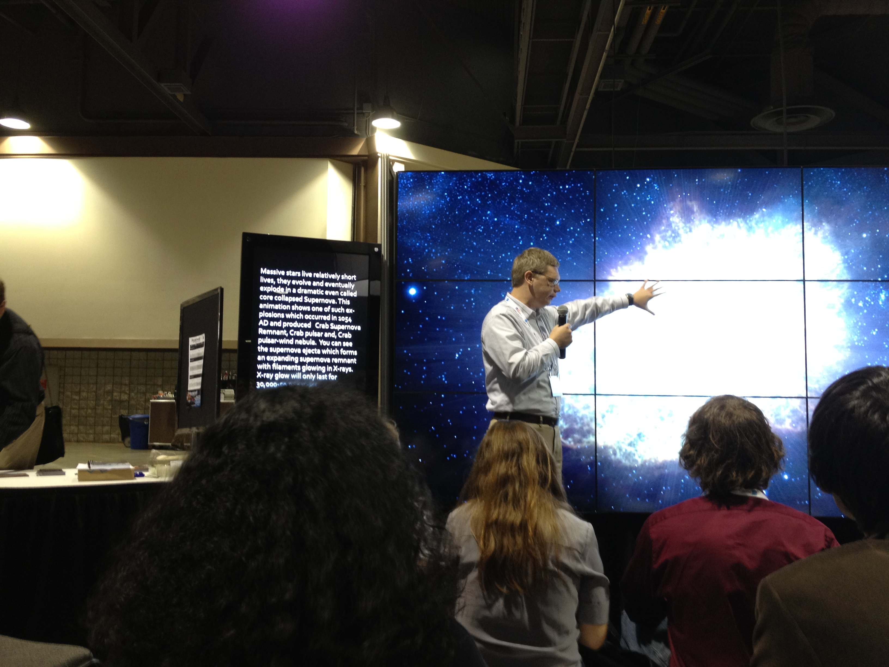
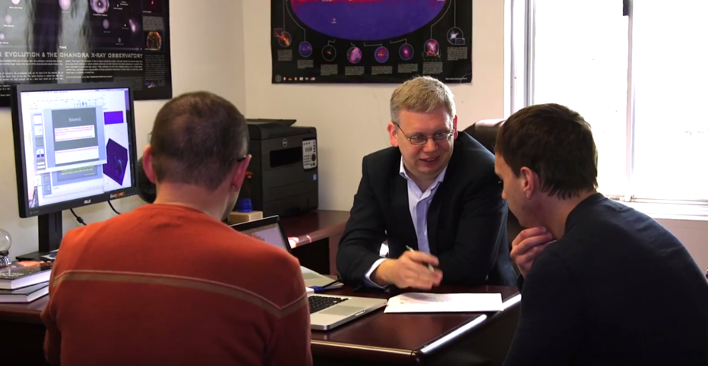
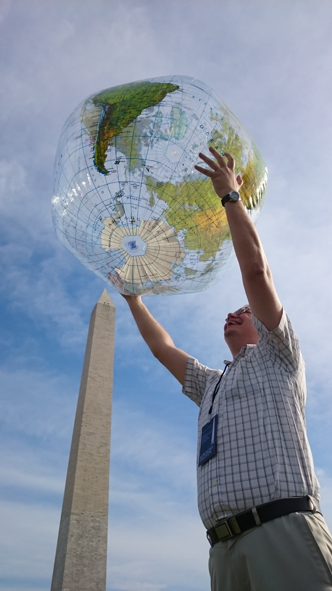

Syllabi for courses I taught:
Astrophysics II: High-Energy Astrophysics (PHYS 6730; Fall 2022)
Stars, Planets, and Life in the Universe (ASTR 1001-10; Spring 2022)
Applied Statistics and Data Analysis in Physics (PHYS 6810; Spring 2022)
Astrophysics I: Radiative Processes (PHYS 6630; Fall 2021)
Origins of Cosmos (ASTR 1002; Spring 2021; Lecture & Lab)
Space Astrophysics (ASTR 3161; Spring 2020)
Applied Statistics and Data Analysis in Physics (PHYS 6810; Spring 2020)
Astrophysics II - High Energy Astrophysics (PHYS 6730; Fall 2019)
Special Topics in Astrophysics (PHYS 8150; Spring 2019)
Applied Statistics and Data Analysis in Physics (PHYS 6810; Spring 2018)
Computational Physics (PHYS 3181; Spring 2018)
Stars, Planets, and Life in the Universe (ASTR 1001-11; Fall 2017)
Computational Physics (PHYS 3181; Spring 2017)
Stars, Planets, and Life in the Universe (ASTR 1001; Fall 2016)
Applied Statistics and Data Analysis in Physics (PHYS 6810; Spring 2016)
Space Astrophysics (ASTR 3161; Spring 2016)
Special Topics in Astrophysics (PHYS 8150; Spring 2015)
Origins of Cosmos (ASTR 1002; Spring 2015; SCALE-UP)
Origins of Cosmos (ASTR 1002; Fall 2014; SCALE-UP)
Astrophysics I - Space Astrophysics (PHYS 6630; Spring 2014)
Space Astrophysics (ASTR 2161; Spring 2014)
Origins of Cosmos (ASTR 1002; Fall 2013; SCALE-UP)
Space Astrophysics (ASTR 2161; Spring 2013)
Wolfram Mathematica tutorial (download notebook file)
Python tutorial (download iPython notebook file)
